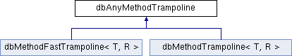

#include <class.h>
Inheritance diagram for dbAnyMethodTrampoline:

Public Member Functions | |
| virtual void | invoke (byte *data, void *result)=0 |
| virtual dbAnyMethodTrampoline * | optimize ()=0 |
| dbAnyMethodTrampoline (dbFieldDescriptor *fd) | |
| void * | operator new (size_t size EXTRA_DEBUG_NEW_PARAMS) |
| void | operator delete (void *p EXTRA_DEBUG_NEW_PARAMS) |
| virtual | ~dbAnyMethodTrampoline () |
Public Attributes | |
| dbFieldDescriptor * | cls |
Detailed Description
Trampolinefor invocation of methods from SubSQL
Constructor & Destructor Documentation
| dbAnyMethodTrampoline::dbAnyMethodTrampoline | ( | dbFieldDescriptor * | fd | ) | [inline] |
Method tramopile constructor
- Parameters:
-
fd method descriptor
| virtual dbAnyMethodTrampoline::~dbAnyMethodTrampoline | ( | ) |
Trampoline desctructor
Member Function Documentation
| virtual void dbAnyMethodTrampoline::invoke | ( | byte * | data, | |
| void * | result | |||
| ) | [pure virtual] |
Invoke method
- Parameters:
-
data pointer to the record insode database result pointer to place result in
Implemented in dbMethodTrampoline< T, R >, and dbMethodFastTrampoline< T, R >.
| virtual dbAnyMethodTrampoline* dbAnyMethodTrampoline::optimize | ( | ) | [pure virtual] |
Get optimize trampoline. Optimized trampoline can be used for records which format in the database is the same as in application. In this case there is no need to fetch record and pointer insode database can be used intead
- Returns:
- optimized nethod trampoline
Implemented in dbMethodTrampoline< T, R >, and dbMethodFastTrampoline< T, R >.
The documentation for this class was generated from the following file:
Generated on Sun Aug 22 2010 23:57:51 for FastDB by
 1.7.1
1.7.1